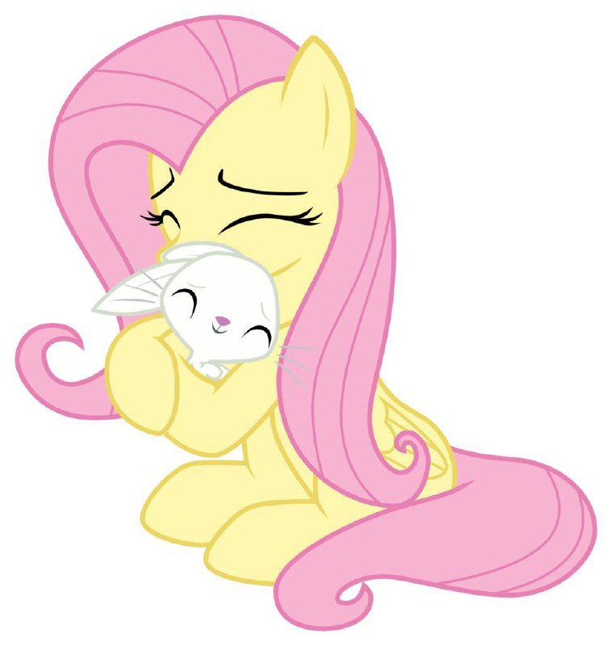
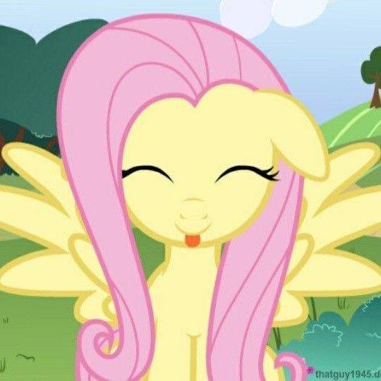
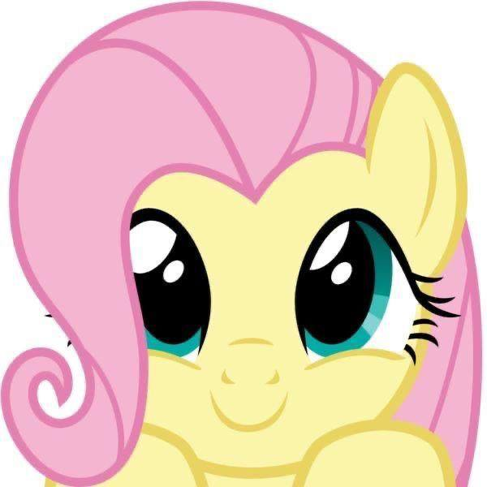
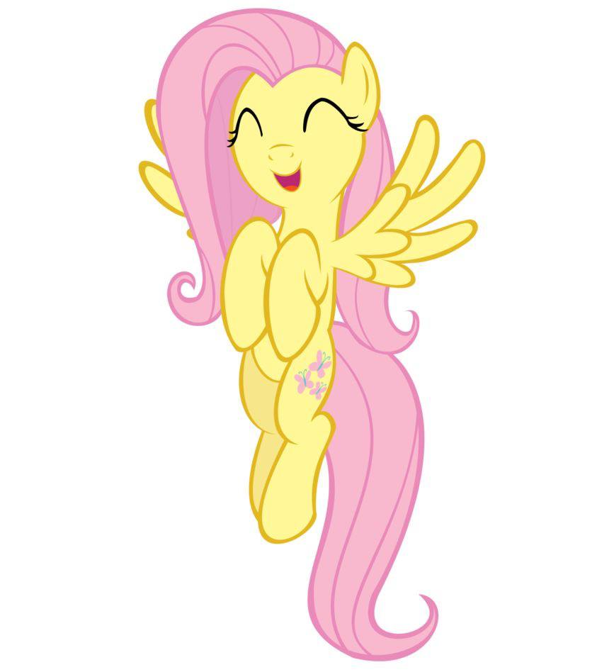
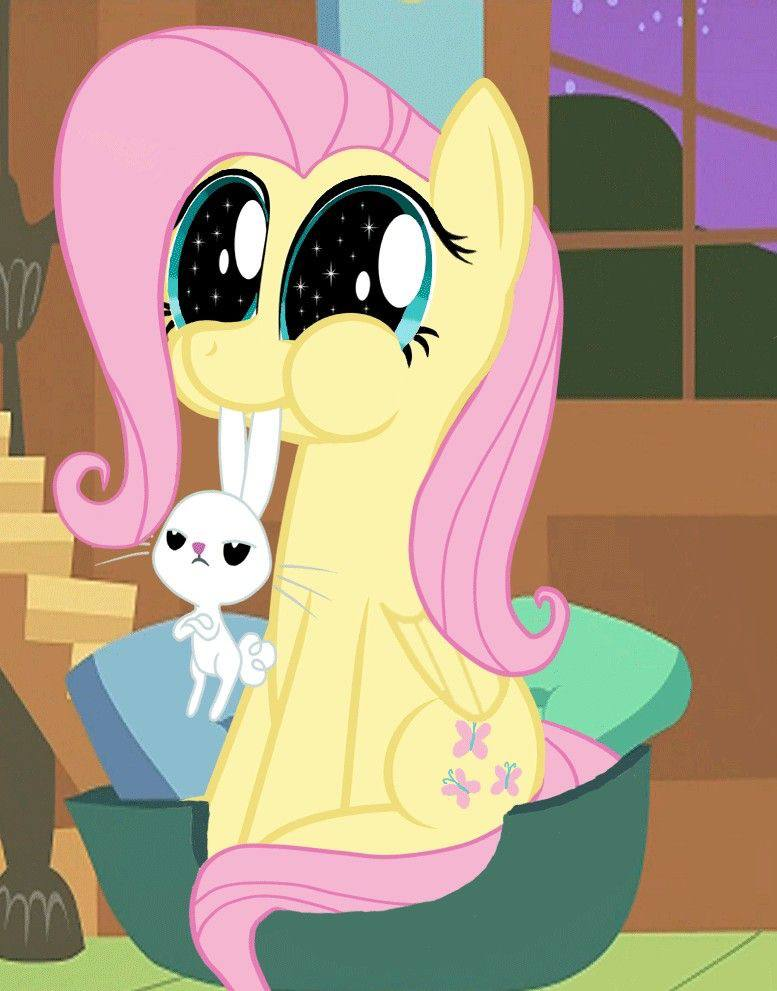

Флаттершай — одна из главных героинь «Мой маленький пони: Дружба — это чудо». Она живёт в маленьком домике недалеко от Вечнозелёного леса и заботится о животных, в том числе о своём питомце-кролике Энджел. Она олицетворяет элемент доброты.
Как и Рейнбоу Дэш, Флаттершай родом из Облачного города. В юности она была выше и крупнее, чем обычно, и у неё были немного больше крылья. В The Cutie Mark Chronicles Флаттершай рассказывает, что в детстве она плохо летала и подвергалась травле со стороны хулиганов в летнем лагере. В какой-то момент Рейнбоу защитила её от хулиганов и вызвала их на соревнование, но сразу после его начала участники случайно столкнули Флаттершай с облаков.
Когда хулиганы случайно столкнули Флаттершай с облаков, она благополучно приземлилась на большой рой бабочек, пролетавших над лугом. Никогда раньше не бывавшая на земле, она восхищалась флорой и фауной, пока ударная волна от близкого взрыва не заставила животных спрятаться. Флаттершай заслужила свой знак отличия, утешив животных и осознав, что может общаться с ними «на другом уровне».

В первых нескольких сезонах сериала Флаттершай обычно изображается застенчивой и тихой. Она отвечает нервным шёпотом, когда Твайлайт Спаркл спрашивает её имя во время их первой встречи в «Дружба — это чудо», часть 1. В «Грифон-неудачник» Флаттершай доводит себя до слёз, когда Гильда ругает её и кричит ей в лицо в ответ на случайное столкновение. До посещения семинара по уверенности в себе, который проводил Железная Воля в Не сдавайся, Флаттершай избегала конфликтов с другими пони на рынке, даже когда они пользовались её добротой.
В Драгоншай Флаттершай пытается предупредить горожан об облаке дыма, но её никто не слушает из-за тихого голоса. В начале Соник Рейнбум она изо всех сил подбадривает Рейнбоу Дэш, но может произнести только шёпот, что очень раздражает Рейнбоу. В Волшебной дуэли Флаттершай находит книгу об Амулете аликорна и пытается показать её своим друзьям, но они узнают об открытии только тогда, когда Спайк забирает у неё книгу и сам её демонстрирует.
Застенчивость Флаттершай часто сочетается с сильным страхом перед незнакомыми ситуациями или общением. В «Драгоншай» она признаётся, что боится взрослых драконов, из-за чего её друзья задерживаются на пути к вершине горы. Этот же страх заставляет её выпрыгнуть из окна коттеджа в Dragon Quest, когда Рэйнбоу и Твайлайт Спаркл приглашают её понаблюдать за миграцией драконов.
Флаттершай олицетворяет элемент доброты. Когда остальные Шестеро Грив пытаются пробиться мимо мантикоры в «Дружба — это чудо», часть 2, Флаттершай останавливает их и проявляет сострадание к существу. В результате оказывается, что причиной его агрессии был шип, застрявший в лапе, и пони могут пройти мимо, просто вытащив шип. В Драконьей стране Флаттершай, доведя дракона до слёз своим порицанием за то, что он напал на её друзей и наполнил небо дымом, утешает его и уверяет, что он «не плохой дракон», а просто «принял неверное решение».
В «Возвращении Гармонии. Часть 1»Дискорда пытается настроить Флаттершай против её друзей, утверждая, что они считают её «слабой и беспомощной», но Флаттершай с радостью принимает этот образ и выражает признательность за их понимание. Разозлившись, Дискорда с помощью магии гипнотизирует её, чтобы она вела себя жестоко по отношению к другим. Она мучает и унижает своих друзей и играет в «Держись подальше» с книгой, пока Твайлайт Спаркл пытается её прочитать, хотя в «Возвращение гармонии. Часть 2» её нормальное поведение в конце концов восстанавливается благодаря заклинанию Твайлайт, возвращающему воспоминания.

В «Сохраняйте спокойствие и продолжайте порхать» Флаттершай — единственная из своих друзей, кто верит, что Дискорд может исправиться. Она проявляет к нему искреннюю доброту и дружбу, что в конечном счёте заставляет его осознать их ценность. В «Нелегко быть Бризи» желание Флаттершай удовлетворить любую прихоть Бризи в итоге приносит больше вреда, чем пользы, и она понимает, что доброта иногда требует твёрдости.
В фильме «Мой маленький пони» Флаттершай помогает одному из стражников Короля Шторма рассказать о своих чувствах.
Несмотря на свою обычную застенчивость, Флаттершай иногда может проявить настойчивость и инициативу. В Sonic Rainboom она даёт отпор группе хулиганов, когда они сомневаются в способности Рэйнбоу Дэш выполнить звуковой дождь на соревновании «Лучший молодой лётчик». В It Ain't Easy Being Breezies Флаттершай сердито настаивает на том, чтобы группа пчёл оставила Морскую Бриз в покое после того, как они проигнорировали её спокойные призывы. В Флаттершай наклоняется Флаттершай не соглашается с мнением производственной команды своего приюта для животных и настаивает на своём видении проекта, из-за чего Пинки Пай называет её «Флаттерболд».
В «Опусти копыто»Флаттершай понимает, что другие пользуются её добротой, и посещает семинар по развитию уверенности в себе, который проводит Железная Воля. Поначалу его методы работают, но в конце концов Флаттершай становится слишком напористой, что приводит к разладу с Рэрити и Пинки Пай. Когда Железная Воля приходит к Флаттершай, чтобы забрать плату за семинар, она вежливо, но твёрдо напоминает ему о его гарантии возврата денег и заявляет, что не удовлетворена. Пока Железная Воля уходит в замешательстве, Рарити и Пинки поздравляют Флаттершай с тем, что она научилась быть настойчивой, не вызывая неприязни, и все мирятся.

В шестом сезоне Флаттершай становится более остроумной и игривой в своей напористости. В Флаттер Бразерс она постоянно, часто язвительно, проявляет напористость по отношению к своему младшему брату-бездельнику Зефиру Бризу. В Подземелья и разногласия она дерзко предлагает Дискорд провести время со Спайком и Большим Макинтошем. В Вива Лас Пегасус она поддразнивает Эпплджек, призывая её забыть о вражде с Флим и Флэм, чтобы решить их проблему с дружбой.
О семье Флаттершай становится известно в шестом сезоне в эпизоде «Братишка Флаттершай». Там нам рассказывают что у Флаттершай есть ленивый младший брат Зефир Бриз, также в серии показываются родители Флаттершай, Мистер Шай и Миссис Шай. Родители Флаттершай живут в Клаудсдейле, ее отец работал на фабрике погоды, а на пенсии он коллекционирует облака, а ее мама выращивает цветы. По началу брат Флаттершай не самостоятелен и сидит на шее у своих родителей, но благодаря вмешательству Флаттершай и Радуги Дэш, Зефир Бриз становится самостоятельнее и закончив курсы гривотерапии он перестает досаждать своим родителям и обретает цель.

Как и у любого любителя животных, у Флаттершай есть несколько зверушек, которые живут или с ней, или неподалеку от её дома, хотя она никогда не считает никого из них своим «питомцем". Наиболее заметным питомцем Флаттершай является кролик по кличке Энджел. Представленный в третьем эпизоде, Энджел имеет волевой и влиятельный характер в отличие от тихости и застенчивости своей хозяйки. Часто он пытается заставить её высказывать свои мысли вслух и не позволяет ей отступать от намеченной цели. Например, в серии «Птица Феникс», он запирает домик Флаттершай изнутри после её ухода, чтобы прекратить её попытки отблагодарить его за напоминание, а в «Приглашение на бал», он настойчиво требует от Флаттершай проявить активность в конкуренции с другими пони за дополнительный билет на Грандиозный бал Гала-концерт.